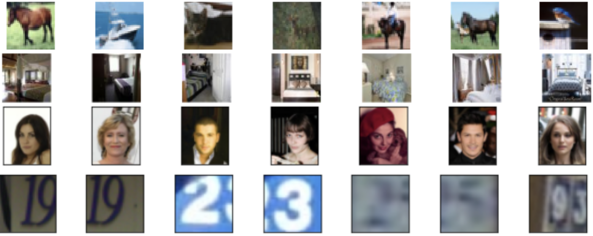
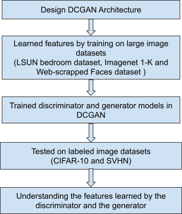
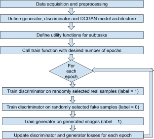
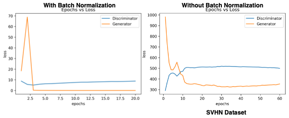
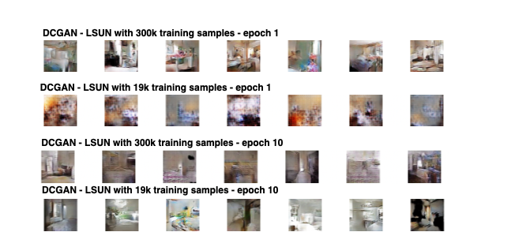
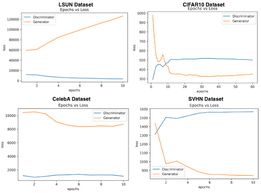
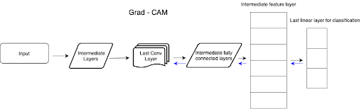
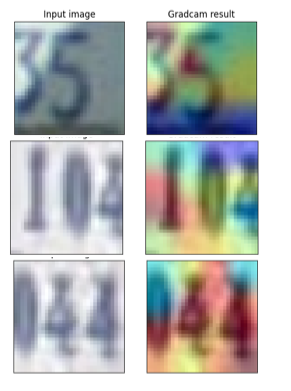

Unsupervised Representation Learning with Deep Convolutional Generative Adversarial Networks
This paper presents the architecture of the Deep Convolutional Generative Adversarial Network (DCGAN) and illustrates its use for learning feature representations from images. Thus, it presents this network for unsupervised learning of images. Our project is adapted from this paper. We have tried to tackle the task of training the proposed network on multiple image datasets.
Introduction
This paper explores the problem of learning image features from large datasets using Generative Adversarial Networks (GANs) instead of deep Convolutional Neural Networks (CNNs). These learned image features can then be used for image classification tasks.
This paper mentions the unstable training of GANs and obtaining nonsensical outputs. To mitigate this, they mention certain architectural constraints for GANs for successful training on large image datasets. This proposed architecture is called Deep Convolutional Generative Adversarial Networks (DCGANs).
Further, this paper shows the use of the trained discriminator model of the GAN for image classification and compares the results with other common image classification algorithms.
Finally, this paper presents the concept of the learned generator model having vector arithmetic properties that can be used to understand the quality and properties of the generated image samples.
Summary of Original Paper
This paper presents the topology of their Convolutional GAN. The authors suggest some architectural constraints for stable training of the Convolutional GAN and they call it the DCGAN. Their suggestions include replacing max-pooling with strided convolutions, removing fully connected layers, using batch normalization in both generator and discriminator parts, and using tanh non-linearity in the last layer, and using LeakyReLU in the discriminator model. This proposed architecture is shown in figure below.

The authors posit that their architecture can be used to learn feature representations from object parts to scenes, and these learned features can be used for supervised learning tasks. They suggest that their proposed architecture can be used for stable training across a range of large image datasets.
The authors mention the training of the DCGAN on large image datasets like Imagenet 1-K, LSUN (Large-scale Scene Understanding), and a web-scrapped Faces dataset. They preprocess the images by scaling to [-1, 1]. They use mini-batch Stochastic Gradient Descent (SGD) with a batch size of 128. The weights are initialized randomly from a normal distribution with zero mean and a very small standard deviation of 0.02. They have used LeakyReLU activation in the discriminator with a leak value 𝛼 of 0.2. Finally, they have used Adam optimizer with a learning rate of 0.0002 and set the momentum term β1 to 0.5.
The paper further presents details on the datasets used for training the DCGAN. They have used the LSUN bedroom dataset having more than 3 million training examples, and performed deduplication to prevent the model from memorizing training examples. They have also trained the DCGAN on a web-scrapped Faces dataset having 350,000 face boxes without data augmentation. Finally, they have trained it on natural images from the Imagenet-1K resized to 32x32 and without data augmentation.
The final section of this paper focuses on analyzing the trained discriminator and generator. More specifically, they focus on understanding the features learned by these models. They present brief subsections with experiments that the discriminator and generator learn good feature representations of images and they can be used for other unsupervised learning and modeling tasks.
Methodology
Our project focuses on implementing the proposed DCGAN architecture for training on image datasets. We have understood the proposed architecture and implemented it using TensorFlow 2.0 and Keras.CIFAR-10, CelebA, SVHN and 10% of the images of LSUN-Bedroom datasets were used to train the models. This choice of datasets for training the DCGAN is different from the original paper. We chose these datasets because they are smaller and would require lesser computational resources and training time. Further, we have tried to visualize the learned features by performing analysis experiments similar to the source paper. This is done using guided backpropagation.
Problem Formulation and Design Description
The problem at hand requires us to implement the correct DCGAN architecture to train on large image datasets. This task required us to define many utility functions for smaller subtasks as described in the subsequent paragraphs.The first part of the project was to acquire the image datasets from the relevant sources and preprocess them. DCGANs require input images to be scaled to the range [-1, 1] and we performed that using simple numpy functions. Similarly, we also defined a scaleback function to deprocess the image from the range [-1, 1] to [0, 255].
Next, we define the generator and discriminator models constituting the DCGAN. These are the two models that are trained with an adversarial process. The generator learns to generate new images resembling the input dataset and the discriminator learns whether these images are real or fake. This is followed by defining the DCGAN architecture. We have explained the detailed architecture of these models in the next section.
The problem at hand requires us to implement the correct DCGAN architecture to train on large image datasets. This task required us to define many utility functions for smaller subtasks as described in the subsequent paragraphs.The required utility functions in separate .py files. We defined the true_samples_generator function to select random real training samples with label = 1. On the other hand, the fake_samples_generator function is used to generate fake samples (label = 0) using the generator model. We defined the make_latent_samples to generate random latent samples given as input to the generator. Other utility functions are defined to plot the generator and discriminator losses and plot them and to display the generated images.
Implementation
We have implemented this project by dividing it into smaller tasks, each coded in Python on Jupyter notebooks and multiple .py files. We have utilized TensorFlow 2.0 and Keras for the deep learning tasks. All the training and inference tasks have been performed on a Google Cloud virtual instance powered by Nvidia Tesla K80 GPU. The datasets we have used for this project are publicly available.
The first part of our project implementation is coding the DCGAN architecture. We followed the guidelines suggested in the paper, however, we needed to perform minor adjustments for stable training and proper outputs. We begin with defining the generator architecture. It is a Sequential model. It accepts the input of a latent sample (100 randomly generated numbers) and produces an image that resembles a training example. It consists of a dense layer followed by LeakyReLU activation with leak value 𝛼 as 0.2 as suggested in the paper and the output is reshaped to (4, 4, 256). A highlight of the generator architecture is the use of the transpose convolution (strided convolution) operation which results in increasing the dimensions of the input. This is done because the generator has to generate images of the same size as that of the training examples. The output activation used here is tanh.
Next, we define the discriminator architecture. It is a Sequential model and its input is an image with each pixel in the range [-1, 1]. The model consists of convolutional layers followed by LeakyReLU layers. The leak parameter 𝛼 is set to 0.2 as suggested in the paper. Finally, the Flatten, Dropout and Dense layers are used. The output of a discriminator is the probability of the image being real or fake.
Though the paper also suggests the use of Batch Normalization layers in both the generation and the discriminator, we obtained noisy outputs when we tried this in our implementation. On the contrary, we obtained better results by removing Batch Normalization layers. The reason for this is to be understood.These two models are used to define the DCGAN. The DCGAN is a Sequential model with the discriminator and generator as its components. It uses the Adam optimizer with a learning rate of 0.0002 and momentum term β1 as 0.5 as suggested in the paper.
Results and Conclusion
Impact of Batch Normalization on training
Network mentioned above was trained on the CIFAR 10 dataset with and without the Batch Normalization (BN) layers, and surprising results were observed which were contradicting with the details mentioned in the DCGAN paper. We observed that the model training remains stable when the BN is not used. Whenever the BN layer was included in the network, the loss values of the generator network quickly went to zero and it was not able to recover to continue with the training process, one reason for this could be that BN layer forces all the values to become very small comparatively, and due to this the gradient flow for the generator gets vanished in few epochs. Whereas, the model training remained stable otherwise as shown below. This same behaviour was observed with other datasets as well. For this reason, we decided not to include the BN layers in the network for the further analysis. The results with and without BN are shown below
Impact of the training data size on image generation
To evaluate the impact of the amount of training data on the image generation, we trained the network twice on LSUN, one with the 10% of LSUN dataset which contained around 300k images (DCGAN-LSUN1), and the other with a subset of the LSUN images which contained around 19k images (DCGAN-LSUN2). Since the image size of each image in the LSUN was (64, 64, 3), the model architecture was modified slightly to incorporate this difference. DCGAN-LSUN2 took 2.5 hours and DCGAN-LSUN1 took 6 hours to get trained. The generated images were compared against each other epoch wise, and it appears that the DCGAN-LSUN1 was able to generate good quality images starting from epoch number 1 as compared to the blurry images generated by the network DCGAN-LSUN2 during the first few epochs. However, there was not much noticeable improvement in the DCGAN-LSUN1 generated images as the epochs increased whereas the DCGAN-LSUN2 was still trying to make better quality images with the increase in epochs. This could potentially mean that, when DCGAN is trained on a large dataset, it might stop generating better images after a first few epochs. Images generated by both models at Epoch 1 and 10 are shown in Fig. 8
Understanding the training losses
As mentioned in the previous section, we trained DCGAN on four different datasets that includes both small and large image datasets (60k to 300k images). We tried to analyze the losses and their convergence behavior during the training time as shown in Fig. 9. for further analysis. It is evident from the figure below that, for a smaller dataset there appears to be a point at which the loss_generator and loss_discriminator of the DCGAN intersects and after that point onwards, the loss_generator starts to either decrease or tries to remain stable. Whereas in the large datasets, there seems to be no point in the early epochs at which the loss_generator and loss_discriminator of the DCGAN meets. This could possibly explain why the generated images start to stop improving after a few epochs
Epoch wise results of the generated images
The DCGAN generated images per epoch for various datasets are shown in the videos below. DCGAN trained on CelebA and the LSUN seems to have produced the best results for this network setting.
Visualization of the discriminator through Grad-Cam
Gradcam can be seen as a tool for visualizing the activation maps in a CNN, specifically, it generates a heatmap for every input image to indicate the spatial importance. Gradcam uses the gradients that flow into the last Conv layer of the network for understanding the relative importance of each unit for making a particular prediction. The flow of gradcam can be seen below.
In this case, the Gradcam is used to visualize the features of the DCGAN’s discriminator network which was trained on the SVHN dataset. Given any image, the discriminator of the DCGAN tries to predict whether that given sample is real or fake i.e. generated by the generator network. Visualization results for three test images can be seen in Fig. 10. The images on the left column represent the input images from the SVHN dataset itself and the corresponding image on the right column represents the Gradcam’s result. Blue colored portion of the image indicates the part which CNN did not use much for making the prediction, and the red and yellowish colored portion in the images indicates the section which was important in making the prediction (predicting true in these examples). For the first case, it is clear that the section “3” and “5” contributed the most to call out whether it is a fake or real image. This is the same with the second and the third image shown in Fig. 10, in which the discriminator learnt to look at the numbers present in the image for making the prediction. This indicates that the trained discriminator learnt to look at meaningful patterns rather than just memorizing samples from the input training data.
Visualization of the discriminator through guided back propagation
To show that unsupervised DCGAN trained on a large image dataset can also learn a hierarchy of interesting features we used guided backpropagation, to visualize the trained filters of the last convolution layer of the discriminator model.Guided backpropagation sets all negative gradients (which signifies that a pixel is not important) to zero. Values in the filter map greater than zero signify pixel importance which are overlapped with the input image to show which pixel from the input image contributed the most. The visualizations show that a significant amount of features respond to beds - the central object in the LSUN bedrooms dataset. The input images and visualizations of the filter are shown below.
Comparison of the Results Between the Original Paper and Students’ Project
The paper shows the generated outputs obtained by training the DCGAN on the LSUN dataset after 5 epochs.The authors note here that is visual underfitting as there is repeated noise texture in some outputs parts of the images. We have observed the similar noise textures on our generated outputs on the LSUN dataset. The paper, however, does not show their generated results on other datasets. As mentioned in the paper, we have observed similar noise textures across generated images from all the datasets we used.
The paper further illustrates use of the learned models as feature extractors. They have presented the use of the discriminator topped by commonly used classifiers like SVM and K-means. They have compared the performance of this architecture with CNNs for image classification. In this project, however, we could not perform this step.
We have observed the similar noise textures on our generated outputs on the LSUN dataset. The paper, however, does not show their generated results on other datasets. As mentioned in the paper, we have observed similar noise textures across generated images from all the datasets we used.
The paper also argues that the discriminator learns meaningful patterns for distinguishing images rather than just memorizing the training examples. We have also reached this conclusion by visualzing the discrimnator’s features using the Gradcam and the Guided backpropagation algorithms.
We further did experimentations to observe the stability of the network by changing the size of the training data, adding the batch normalization layer.
Discussion of Insights Gained
We implemented the DCGAN architecture as explained in the paper for training on CIFAR-10 and CelebA datasets. Our implementations could generate samples resembling the images in these datasets. However, we had to tweak the proposed architecture a bit for generating good results. This involved using a dropout of rate 0.4 in the discriminator model.The paper did not provide any insights on the number of epochs to train the model so we tried different values to observe results.
Conclusion
This project focuses on implementing the architecture of a Deep Convolutional Generative Adversarial Network (DCGAN). We have learned that the generator and discriminator models are the two components of the DCGAN architecture. We implemented this architecture following suggestions in the paper. We trained this model on the CelebA, SVHN, CIFAR-10 and LSUN datasets. Our results showed that the generator could output images resembling the training dataset. Impact of the Batch Normalization layer was studied and the discriminator’s features were also visualized. However, this project can be improvised in the future. The next step to be implemented on this project is to test the trained discriminator as a feature extractor for image classification tasks.
Contact
Shambhavi Roy: sr37676@columbia.edu
Saravanan Govindarajan: sg3896@columbia.edu
Simran Tiwari: st3400@columbia.edu
Columbia University Department of Electrical Engineering
Instructor: Professsor Zoran Kostic